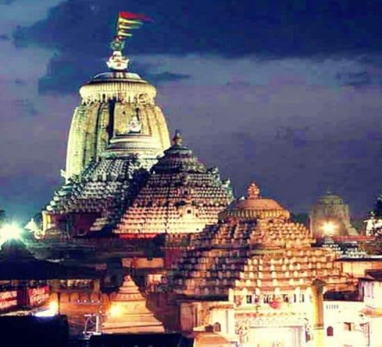

Jaganatha Temple, Puri
jagannath temple is an important pilgrimage destination and one of the four great 'Char Dham' pilgrimage sites, found at India's four cardinal points.
Odisha has been rightly regarded as a land of myriad marvels. The dynamic topographical and vegetational strength of Odisha have combined to extract some of the most stunning destinations which not only offers a visual feast for the inquisitive visitors but also highly educative and culturally pleasing insight into one of the oldest civilizations of the world.
jagannath temple is an important pilgrimage destination and one of the four great 'Char Dham' pilgrimage sites, found at India's four cardinal points.
Konark is one of the well known tourist attractions of Orissa. Konark, Konark houses a colossal temple dedicated to the Sun God. Even in its ruined state it is a magnificient temple reflecting the genius of the architects that envisioned and built it
Purisituated on the eastern sea-bed of India, is the only most popular sea-side resort where the beauty of the sky in radiant colours, the roaring waves and the golden beach can be experienced. The long sandy beach draws large numbers of western travellers and Indians.
Dhauli hill is presumed to be the area where the Kalinga War was fought.It is also known as Dhauli Santi Stup. situated at BHubaneswar
The caves are situated on two adjacent hills, Udayagiri and Khandagiri, mentioned as Kumari Parvat in the Hathigumpha inscription. They have a number of finely and ornately carved caves built during 2nd century BCE
Kalijai Temple is located on an island in Chilika Lake. It is considered to be the abode of the Goddess Kalijai.